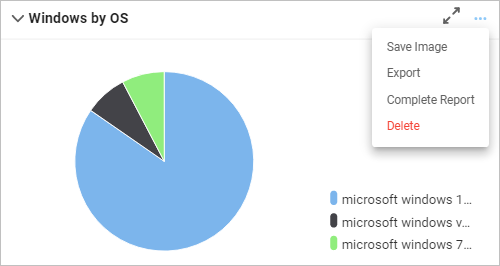

Dashboard Report Actions
For reports on the dashboard, various other functions are available through the menu displayed when clicking the three dots in the upper corner of the report. The options in this drop-down list change based on the type of report.
For example, when a graphic element is displayed, these options may be shown:

Click for complete report launches the relevant window.
Export automatically exports the report to the system's default download location, which can then be retrieved via an email notification.
Collapse reduces the size of the displayed information.
Maximize expands the size of the displayed information.
Remove takes the report off the dashboard (it can always be added back as it's not deleted).


Save image automatically saves it in the default format (such as .png, .jpg, etc.) and places it in the download location. (The image type and download location vary by system.)
Export generates an Excel spreadsheet and sends an email when the spreadsheet is ready for download.
Complete Report opens the applicable window to view the data that generates the report.
Delete removes the component from the dashboard.
Another example is when a calendar report is shown. The options list changes and displays Year, Month, Week, and Day.

The double-sided arrow opens the selected report to a larger view.
Related Topics